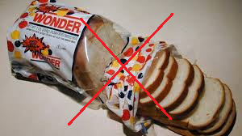
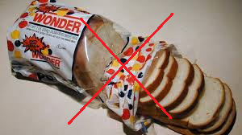

Most store-bought granola bars contain loads of sugar, specially high fructose corn syrup which is something you do not want to eat. Making home-made granola bars give you control of what goes inside it.There are many ways to make granola bars at home where you can adjust how much you make and what you put inside.
French fries made from white potatoes are one of the most common favorite children's food. This side dish is loaded in fats and unhealthy carbohydrates that will slow you down and make your body feel heavy. Try this alternative of....PURPLE POTATO FRIES! Purple potatoes have healthy carbs that will not slow you down, try baking them aswell, just drizzle with coconut or olive oil, leave the salt out and you will have a super yummy and cool looking side that I'm sure you'll be excited to it...It's PURPLE!
<Spaghetti sounds so yummy specially with a ton of cheese on top, right? Well this food does not have many nutrients, it doesn not really have anything that will be good for you. How about switching to veggetti? This is just a vegetable spaghetti, use squash instead of noodles, this one switch will add a serving of vegetables to make you feel better and healthier, give it a try! I promise you wont regret it!
An order of 4 chicken nuggets already has 190 calories and 400mg of sodium. Control what you eat by making your own! With you parents help cut some chicken to pieces, season*limit the salt* dip in eggs then panko bread crumbs, it's that easy! Just bake and it's ready to eat.
White bread barely has any nutrition to help you grow big and strong, so next time you're craving a P&B sandwich or a grilled cheese, try whole grain bread instead, it has healthy carbs to help you with your day!